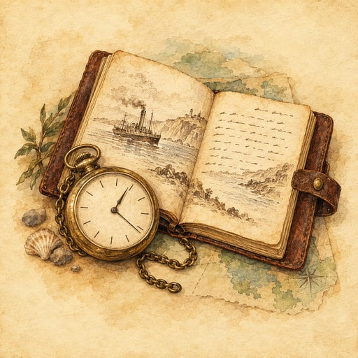
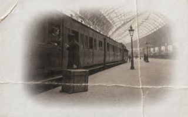
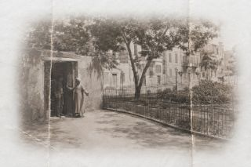
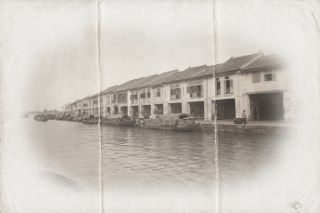
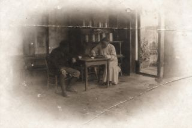

Lennä kaupungin ylle
Pyöräytä karttapalloa ja laskeudu kaupunkiin. Ensimmäisenä on valmiina Pariisi: piirretty kaupunki, jossa Eiffel-torni ja Louvre seisovat paikoillaan. Kierrät nähtävyydet yksi kerrallaan, ja kertoja kertoo niiden tarinat.
Seikkailupeli · 13 vuotta täyttäneille ja aikuisille
Isoisän matkapäiväkirja vuodelta 1873. Tämän päivän maailma. 80 päivää aikaa.
Vuosi 1873 · tämän päivän maailma
Sen sisällä on isoisäsi matkapäiväkirja vuodelta 1873. Lähdet hänen jäljilleen maailman ympäri ja etsit aarteita, jotka maailma on unohtanut. Ehditkö maailman ympäri alle 80 päivässä?
Pelissä näet asioita, joita ei enää ole, ja pääset paikkoihin, joihin on vaikea päästä. Kuljet taidemuseon saleissa kuin olisit itse paikalla ja nouset raketilla avaruusasemalle. Koukuttavat tarinat ja upeat näköalat kietoutuvat yhteen, ja kaikki, mitä peli kertoo, on totta.

Isoisän valokuvia matkalta, 1873









Pelin esittely
Pyöräytä karttapalloa ja laskeudu kaupunkiin. Ensimmäisenä on valmiina Pariisi: piirretty kaupunki, jossa Eiffel-torni ja Louvre seisovat paikoillaan. Kierrät nähtävyydet yksi kerrallaan, ja kertoja kertoo niiden tarinat.
Kartan vihreä piste vie aarteelle. Pariisissa yhdistät rakennuksiin nimet ja rakennusvuodet, ja yrityksiä on kaksi. Löydöstä saat lyhyen, tosi faktan ja onnentoivotuksen. Jokaisessa kaupungissa odottaa oma tehtävänsä.
Raketti nousee Pohjois-Norjasta avaruusasemalle. Kupolin ikkunasta näet Maan ja kuvaat minkä tahansa paikan omaksi julisteeksesi.
IV
Peking. Pieni Puyi, Kiinan viimeinen keisari, karkaa hovilta. Sinä ohjaat häntä Kielletyn kaupungin kujilla ja pihoilla ja väistät takaa-ajajia.

V
Savonlinna, elokuun yö 1499. Hiivit linnaan, ratkaiset arvoituksen ja löydät aarteen.
Linssi avaa kartalle yhden aiheen ja panee sen liikkeelle: missä Euroopan keksinnöt syntyivät, miten ihminen levisi maapallolle, mitä maailman radioissa soi juuri nyt.
Pelin ajatus
Maailman kulttuuri, taide ja tiede ovat aarre, joka hukkuu helposti somen ja tekoälyn roskaan. Matkakirja kaivaa sen esiin.
Matkakirja on elämyksellinen oppimispeli 13 vuotta täyttäneille ja aikuisille. Uteliaisuus herää pienestä asiasta, vaikka paikallisesta herkusta, ja siitä avautuu koko maa. Mikään ei tunnu koululta. Silti kaikki, mitä peli kertoo, on tarkistettua, ja jokainen maa näytetään asukkaidensa silmin.
Tekoäly auttaa etsimään.
Ihminen valitsee ja hyväksyy kaiken.
Beta-vaiheessa
Pariisi nähtävyyksineen ja aarretehtävineen, avaruusasema ja linssit. Lautapelit: Mylly Berliinissä, Tavli Ateenassa ja Shakki Wienissä. Valituissa kaupungeissa pelaaja nousee kuumailmapallon koriin, ja opas kertoo kohteista.
Reitti jatkuu
Amsterdam, Lontoo, Rooma ja Wien. Jokaisessa on oma tehtävä.
iPhonelle ja iPadille
Nyt beta-vaiheessa
Matkakirja tulee iPhonelle ja iPadille. Selaimessa pelattava versio on sekin vasta tulossa.
Peli on nyt suomenkielinen. Siitä on suunnitteilla englanninkielinen käännös ja myöhemmin käännöksiä myös muille kielille.